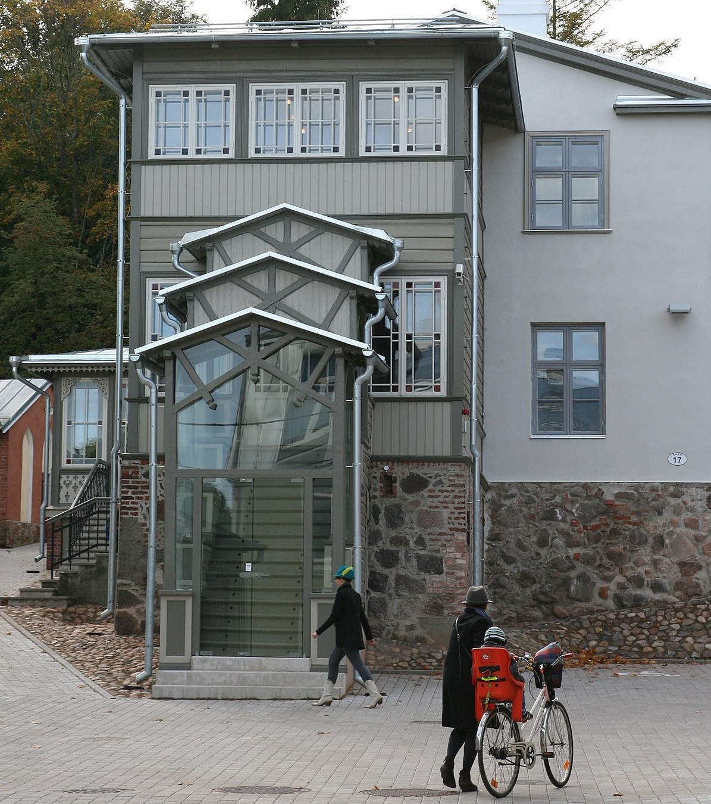

VEEBIDISAINI AINED
...........................
Olles tulnud Vocosse suhteliselt ilma igasuguse IT-valdkonna ja graafilise disaini taustata, saan öelda, et juba esimestel kuudel oli tunda väga suurt arenguhüpet. September algas programmeerimise ainetega:
Tuleb tunnistada, et sain imekombel nende ainetega hakkama ja mulle isegi meeldis pusida just keerulisemate ülesannetega ja teha korralikku ajugümnastikat.
Kuna olen loominguline inimene ning kaldun detailidesse süvenema, siis veebidaini ained andsid põhjust tuua endas välja kunstiline pool. Nautisin animatsioonide tegemist AfterEffects programmis ning Cinemagraphis.
Selle aine loengute käigus õppisime, kuidas elavada oma disaini animatsioonidega. Olin alguses suhteliselt ebakindel ning ei saanud hakkama ei Photoshopi ega Illustratoriga. Illustrator ei meeldinud mulle alguses üldse. Hiljem, kui sain selgeks põhilised nipid, polnud enam keeruline juurde õppida järjest uusi tööriistu, mida programmis kasutada saab. Detsembriks olin juba nii palju valmis, et projektis.
Veebidisaini ainete ülevaade:
Veebidisaini ained panid mind proovile igas mõttes. Tuli aru saada, kuidas töötavad erinevad programmid - Adobe, Figma jne. Kuidas ehitatakse veebilehti nullist ülesse ja kuidas käib see kasutades erinevaid põhjasid - Bootstrap. Sain end proovile panna kasutades HTML-i ja CSS-i. Aga enam meelis mulle esimesel aastal kasutada valmis olevat põhja niing seda enda soovide järgi kujundada, kasutades oma HTML-i ja CSS-is oskuseid. Näide esimesest algelisest mitmelehelisest veebilehest ..............................
Tööelus peavad inimesed hakkama saama erinevate oskuste, emotsioonide ja teadmistega.
Seetõttu on vajalikud järgmised ained:
Mõlema mooduli enamus aineid kandsin ma üle VÕTA-ga, kuna Tartu Ülikoolis õppides ja erinevates töökohtades olid need teamised juba omandatud.
Antud aine viiski mind selleni, mil sain aru, et õpin õiget asja. Üheks aine arvestatud saamise tingimuseks oli UX/UI analüüsi läbiviimine praktiliste tegevuste käigus. Juhuste kokkusattumise tõttu olin õigel ajal õiges kohas ning kursusekaaslastega kolmekesi asusime täide viima suurimat projekti, mida oma senises elus ette olen võtnud.Meil tuli Tartu Loomemajanduskeskusesele luua veebileht ja e-pood. Kuna meil oli vaja teha ka kasutajakogemuse analüüs, siis haarasime kohe härjal sarvist, ning mõtlesime teha antud projekti kogu hingest ja südames. Oma aja, oma pere ja muude õpiülesannete kõrvalt.
Täiesti eraldi tahan välja tuua kasutajakogemuse aine. Tulin õppima Vocosse UX/UI disaineriks ja kui see aine algas, sain kohe aru, et see on see, mida ma kindlasti oma edaspidises karjääris peale kooli teha soovin. Võib-olla õnnestub alustada juba õpingute teisel aastal, kuid sellest on liiga vara rääkida. Kasutajakogemuse analüüsi ained toimusid enamjaolt loengute ja seminaride vormis. Väljastpoolt kooli tulid UX/UI disainerid ja analüütikud rääkima, kuidas praktilises tööelus õpitavaid oskuseid kasutada saab.
Siinkohal toon välja, mis loengutest sain osa ja mida õppisin:
...........................
Selle aine loengute käigus õppisime, kuidas elavada oma disaini animatsioonidega
Cinemagraph ehk liikumatu pilt, millel väike osa liigub. Cinemagraphi puhul meeldib mulle see, et see on pilkupüüdev ning samas ei ole ta häiriv ega
Tegutsedes väikeettevõtte juhi assistendina, andis see võimaluse taaskord proovile panna enesedistsipliini võime. Pidin enamuse aega üksinda töötama. Minu vastutada olid nii ruumide valmisolek kui veebilehe kujundus ja -haldus. Siin sain kasutada disainimise võimeid ning näidata suutlikkust läbi viia mõtted, mida soovisin ernevates töölõikudes realiseerida.

Kuna enamuse programmidest olen õppima hakanud alles Voco-s, siis pigem hindaks oma oskuseid tagasihoidlikult.
Projekti eesmärgiks oli disainipoe "Hopp" kodulehe ja e-poe loomine.
projekti meeskonna valimine
ärianalüüs
SWOT analüüs
riskianalüüs
nõudete analüüs
projekti disain
projekti eelarve ja ajakava
projekti arendus
projekti testimise läbiviimine, tulemust analüüs ja kasutajate koolitus (arendaja)
dokumentatsioon Jiras
kliendiga suhtlus meili teel (lõime oma meeskonna jaoks eraldi meiliaadressi)
kliendiga suhtlus - külastused ja Google meet
sitemap, wireframe ja prototüüp Figmas
kvantitatiivse uuringu läbiviimine ja analüüs connect.ee keskkonnas
kvalitatiivsed uuringud - intervjuud ja Google meetis küsitlused
kvantitatiivne uuring
hallway test
card sorting test
hi-fi prototüübi test
Väga vajalik on ajaplaneerimise oskus. Tuleb edaspidistes projektides analüüsida ja paika panna ajaraamistik, mille sisse mahutada kogu projekti tegevused. Kui on näha, et ei ole võimalik kliendi poolt soovitud ajavahemikus püsida, pidada läbirääkimised. Hea, kui saab aega pikendada. Kui mitte, siis kliendiga arutada, milliseid etappe ei saa teha või tuleks neid teha väiksemas mahus.
Projekti eesmärgiks oli Voco IKT-osakonna õpetajatele ja turundusosakonnale UX loengu ja workshopi ettevalmistamine ja läbiviimine.
IKT-Osakonna õpetajad on teadlikumad ja oskavad kasutada UX teadmisi igapäevases koolielus ning suhtluses erinevate IT-valdkonna õpilastega.
Meie meeskonna liikmed saavad erinevaid kogemusi - meeskonnatöö, loengu lugemine, projekti läbiviimine.s
meeskondadeks jagamine
UX eriala on Eestis uus valdkond ning seda on õpetatud vähe aega, näiteks VOCO koolis ainult 5 aastat. VOCO õpetajatel puudub pikaajaline kogemus. Samuti puudub UX erialale Eestis kutsestandard.
Koostöö osakonna siseselt on paranenud
õpetajate ja õpilaste omavahelised suhted on muutunud positiivsemaks
tunniteemade kokkupanek on muutunud tõhusamaks
UX ja UI eriala muutub VOCOs populaarsemaks
UX ja UI eriala lõpetajate protsent on tõusnud
UX ja UI erialaga otseselt mitte kokkupuutuvad õpetajad on teadlikumad UX ja UI eriala olemusest.
õpetajate ja õpilaste vaheline koostöö paraneb, stress väheneb
Vajaduste kaardistamine
Erinevateks tiimideks jagamine
Ajaraami seadmine silmas pidades ka vaheetappe
Koosolekute läbiviimine väikeste tiimidega ja kogu meeskonnaga
Välislektoriga kohtumine ja loengu teemade analüüsimine
Workshopi tegevuste analüüsimine
Loengupäeva läbiviimine
Läbiviidud projekti analüüs
Isegi suure meeskonnaga - 12 inimest - on väga edukalt võimalik tiimitööd teha. Saime kogemuse, et kui ülesanded on konkreetselt väiksemate tiimide vahel ära jagatud, on vastutus võrdsemalt jagataud. Samas ei olnud võimalust väga teiste meeskondade töösse süveneda. Mina tundsin, et olin seetõttu vähem asjadega kursis ning lõpptulemus jäi veidi kaugeks. Väiksema tiimiga - 3-4 inimest on projekti lihtsam hallata. Samas oli antud projekt õppe eesmärgil läbi viidud ja seega sai igaüks midagi rohkem koolituspäeva projekti läbiviimistest teada.
Projekti viisime läbi oma kursusega ühtse meeskonnana. Kuna antud projekt oligi õpiväljundi "Meeskonnatöö" raames, siis saime väga korraliku väljaõppe kõikidest UX uuringus vajalike tegevuste läbiviimisest. Mentori rollis oli Frillice meeskonna UX analüütik. Jällegi saime päris elulise ja praktilise kogemuse projektist, mille tulemusi ettevõte ka arvesse sai võtta ja kasutada
Läbi erinevate UX analüüsi meetodite selgitada välja Frillice Community Nutrition äpi tuumik sihtrühm ja testida nendega äpi keskkonnas oleva toidulaua funktsionaalsust.
Intervjuu äriga.
Küsitlus tuumik sihtrühma välja selgitamiseks.
Persoonda koostamine küsitluse tulemuste põhjal.
Konkurentide analüüs.
Kasutajatestide läbiviimine testimaks toidulaua funktsionaalsust.
Saime teha ettevõttele ettepanekuid, kuidas muuta äppi paremaks ja kasutajasõbralikumaks. Ettevõte ei olnud ise taolist suuremahulist testi läbi viinud ja oli väga tänulik, et uuring sai ühe kuuga läbi viidud.
Isegi suure meeskonnaga - 12 inimest - on väga edukalt võimalik tiimitööd UX uuringu osas läbi viia. Saime kogemuse, et kui ülesanded on konkreetselt väiksemate tiimide vahel ära jagatud, on vastutus võrdsemalt jagataud. Samas ei olnud võimalust väga teiste meeskondade töösse süveneda. Mina tundsin, et olin seetõttu nagu vähem asjadega kursis ning lõpptulemus jäi veidi kaugeks. Väiksema tiimiga - 3-4 inimest on projekti lihtsam hallata. Samas oli antud projekt õppe eesmärgil läbi viidud ja seega sai igaüks midagi rohkem UX uuringutes teada.
Ennem Vocosse astumist oli mul kogunenud enese teadmata suur hulk töid, mida tehes ei mõelnud kordagi, et need võiksid kuidagi olla graafilise disaini või millegi muu sarnasega seotud. Siinkohal toon välja mõned tööd, mida teinud olen.

sitemap, wirefram ja prototüübi loomine

Aut maiores voluptates amet et quis praesentium qui senda para

Voco IKT osakonna õpetajatele ja turundusosakonnale loeng ja workshop.

tuleb tuleviku projekt 1
Minuga saad ühendust võtta järgmiselt:
Tartu maakond, Ülenume
ursula.muts7@gmail.ee
+372 50 60 678